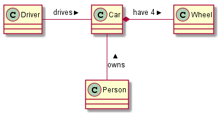
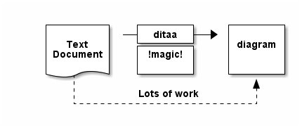
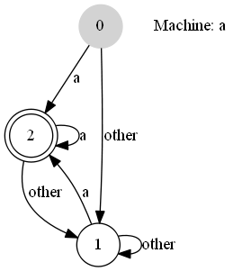

Developers' Guide
1. Developers' Guide
This developers' guide is for:
-
programmers who want to just use Apache Isis to build applications, and want help setting up their development environment or to build their code from the command line (eg to execute within a continuous integration server such as Jenkins)
-
programmers who want to contribute back patches (bug fixes, new features) either to the codebase or the framework’s documentation
-
committers of Apache Isis itself who want guidance on release process, publishing documents and other related procedures.
1.1. Other Guides
Apache Isis documentation is broken out into a number of user, reference and "supporting procedures" guides.
The user guides available are:
The reference guides are:
The remaining guides are:
-
Developers' Guide (this guide)
-
Committers' Guide (release procedures and related practices)
2. Using an IDE
The vast majority of Java developers use an IDE to assist with developing their code, and we highly recommend that you do likewise as you develop your Apache Isis applications using an IDE. Apache Isis is built with Maven, and all modern IDEs can import Maven projects.
This chapter shows how to setup and use two of the most popular IDEs, IntelliJ IDEA and Eclipse.
2.1. Developing using IntelliJ IDEA
|
This material does not constitute an endorsement; JetBrains is not affiliated to Apache Software Foundation in any way. JetBrains does however provide complimentary copies of the IntelliJ IDE to Apache committers. |
This section describes how to install and setup JetBrains' IntelliJ IDEA, then how to import an application into IntelliJ and run it.
2.1.1. Installing and Setting up
This section covers installation and setup. These notes/screenshots were prepared using IntelliJ Community Edition 14.1.x, but are believed to be compatible with more recent versions/other editions of the IDE.
Download and Install
Download latest version of IntelliJ Community Edition, and install:
Start the wizard, click through the welcome page:
Figure 1. IntelliJ Installation Wizard - Welcome page
Choose the location to install the IDE:

Figure 2. IntelliJ Installation Wizard - Choose Location
Adjust any installation options as you prefer:

Figure 3. IntelliJ Installation Wizard - Installation Options
and the start menu:

Figure 4. IntelliJ Installation Wizard - Start Menu Folder
and finish up the wizard:

Figure 5. IntelliJ Installation Wizard - Completing the Wizard
Later on we’ll specify the Apache Isis/ASF code style settings, so for now select I do not want to import settings:

Figure 6. IntelliJ Installation Wizard - Import Settings
Finally, if you are a trendy hipster, set the UI theme to Darcula:

Figure 7. IntelliJ Installation Wizard Set UI Theme
New Project
In IntelliJ a project can contain multiple modules; these need not be physically located together. (If you are previously an Eclipse user, you can think of it as similar to an Eclipse workspace).
Start off by creating a new project:

Figure 8. IntelliJ Create New Project
We want to create a new Java project:

Figure 9. IntelliJ Create New Project - Create a Java project
We therefore need to specify the JDK. Apache Isis supports both Java 7 and Java 8.

Figure 10. IntelliJ Create New Java Project - Select the JDK
Specify the directory containing the JDK:

Figure 11. IntelliJ Create New Project - Select the JDK location
Finally allow IntelliJ to create the directory for the new project:

Figure 12. IntelliJ Create New Project
File templates
Next we recommend you import a set of standard file templates. These are used to create new classes or supporting files:

Figure 13. File templates
The file templates are provided as a settings JAR file, namely isis-settings-file-templates.jar. Download this file.
Next, import using File > Import Settings, specifying the directory that you have downloaded the file to:

Figure 14. IntelliJ Import Settings - Specify JAR file
Select all the categories (there should just be one), and hit OK. then hit restart.
|
If importing into IntelliJ 2017.2.3 two categories are shown - "File templates" and "File templates (schemes)". Select all the categories. Apparently no categories are shown if importing into IntelliJ 2016.1.1 Community Edition (and perhaps other 2016 versions). The file does import ok into IntelliJ 15.0.x, so we think this is a bug in the 2016 version. The workaround is to extract the
|
Live templates
We also recommend you import a set of live templates. These are used to add new methods to existing classes:
Figure 15. Live templates
The live templates have a prefix of prefixed either:
-
is: for Apache Isis domain objects -
ju: for JUnit tests -
jm: for JMock mocks or libraries -
ad: for Asciidoc documentation; a full list can be found in the appendix.
The live templates are also provided as a settings JAR file, namely isis-settings-live-templates.jar. Download and import (as for the previous settings JAR files).
Coding Standards
Next, we suggest you recommend you import settings for standard ASF/Apache Isis coding conventions. This file is also provided as a settings file, namely isis-settings-code-style.jar. Download and import (as for the above settings JAR files).
Other Settings (Compiler)
There are also some other settings that influence the compiler. We highly recommend you set these.
On the Compiler Settings page, ensure that build automatically is enabled (and optionally compile independent modules in parallel):

Figure 16. IntelliJ Compiler Settings
On the Annotation Processors page, enable and adjust for the 'default' setting:
Figure 17. IntelliJ Annotation Processor Settings
This setting enables the generation of the Q* classes for DataNucleus type-safe queries, as well as being required for frameworks such as Project Lombok.
|
IntelliJ may also have inferred these settings for specific projects/modules when importing; review the list on the left to see if the default is overridden and fix/delete as required. |
Other Settings (Maven)
There are also some other settings for Maven that we recommend you adjust (though these are less critical):
First, specify an up-to-date Maven installation, using File > Settings (or IntelliJ > Preferences if on MacOS):

Figure 18. IntelliJ Maven Settings - Installation
Still on the Maven settings page, configure as follows:

Figure 19. IntelliJ Maven Settings - Configuration
Other Settings (Misc)
These settings are optional but also recommended.
On the auto import page, check the optimize imports on the fly and add unambiguous imports on the fly
Figure 20. IntelliJ Maven Settings - Auto Import
2.1.2. Importing Maven Modules
Let’s load in some actual code! We do this by importing the Maven modules.
First up, open up the Maven tool window (View > Tool Windows > Maven Projects). You can then use the 'plus' button to add Maven modules. In the screenshot you can see we’ve loaded in Apache Isis core; the modules are listed in the Maven Projects window and corresponding (IntelliJ) modules are shown in the Projects window:

Figure 21. IntelliJ Maven Module Management - Importing Maven modules
We can then import another module (from some other directory). For example, here we are importing the Isis Addons' todoapp example:

Figure 22. IntelliJ Maven Module Management - Importing another Module
You should then see the new Maven module loaded in the Projects window and also the Maven Projects window:

Figure 23. IntelliJ Maven Module Management -
If any dependencies are already loaded in the project, then IntelliJ will automatically update the CLASSPATH to resolve to locally held modules (rather from .m2/repository folder). So, for example (assuming that the <version> is correct, of course), the Isis todoapp will have local dependencies on the Apache Isis core.
You can press F4 (or use File > Project Structure) to see the resolved classpath for any of the modules loaded into the project.
If you want to focus on one set of code (eg the Isis todoapp but not Apache Isis core) then you could remove the module; but better is to ignore those modules. This will remove them from the Projects window but keep them available in the Maven Projects window for when you next want to work on them:

Figure 24. IntelliJ Maven Module Management - Ignoring Modules
Confirm that it’s ok to ignore these modules:

Figure 25. IntelliJ Maven Module Management - Ignoring Modules (ctd)
All being well you should see that the Projects window now only contains the code you are working on. Its classpath dependencies will be adjusted (eg to resolve to Apache Isis core from .m2/repository):

Figure 26. IntelliJ Maven Module Management - Updated Projects Window
2.1.3. Running
Let’s see how to run both the app and the tests.
Running the App
Once you’ve imported your Isis application, we should run it. We do this by creating a Run configuration, using Run > Edit Configurations.
Set up the details as follows:

Figure 27. IntelliJ Running the App - Run Configuration
We specify the Main class to be org.apache.isis.WebServer; this is a wrapper around Jetty. It’s possible to pass program arguments to this (eg to automatically install fixtures), but for now leave this blank.
Also note that Use classpath of module is the webapp module for your app, and that the working directory is $MODULE_DIR$.
Next, and most importantly, configure the DataNucleus enhancer to run for your dom goal. This can be done by defining a Maven goal to run before the app:

Figure 28. IntelliJ Running the App - Datanucleus Enhancer Goal
The -o flag in the goal means run off-line; this will run faster.
| if you forget to set up the enhancer goal, or don’t run it on the correct (dom) module, then you will get all sorts of errors when you startup. These usually manifest themselves as class cast exception in DataNucleus. |
You should now be able to run the app using Run > Run Configuration. The same configuration can also be used to debug the app if you so need.
Running the Unit Tests
The easiest way to run the unit tests is just to right click on the dom module in the Project Window, and choose run unit tests. Hopefully your tests will pass (!).

Figure 29. IntelliJ Running the App - Unit Tests Run Configuration
As a side-effect, this will create a run configuration, very similar to the one we manually created for the main app:

Figure 30. IntelliJ Running the App - Unit Tests Run Configuration
Thereafter, you should run units by selecting this configuration (if you use the right click approach you’ll end up with lots of run configurations, all similar).
Running the Integration Tests
Integration tests can be run in the same way as unit tests, however the dom module must also have been enhanced.
One approach is to initially run the tests use the right click on the integtests module; the tests will fail because the code won’t have been enhanced, but we can then go and update the run configuration to run the datanucleus enhancer goal (same as when running the application):

Figure 31. IntelliJ Running the App - Integration Tests Run Configuration
Also make sure that the search for tests radio button is set to In single module:

If this radio button is set to one of the other options then you may obtain class loading issues; these result from IntelliJ attempting to run unit tests of the dom project that depend on test classes in that module, but using the classpath of the integtests module whereby the dom test-classes (test-jar artifact) are not exposed on the Maven classpath.
2.1.4. Hints and Tips
Keyboard Cheat Sheets
You can download 1-page PDFs cheat sheets for IntelliJ’s keyboard shortcuts: * for Windows * for MacOS
Probably the most important shortcut on them is for Find Action: - ctrl-shift-A on Windows - cmd-shift-A on MacOS.
This will let you search for any action just by typing its name.
Switch between Tools & Editors
The Tool Windows are the views around the editor (to left, bottom and right). It’s possible to move these around to your preferred locations.
-
Use
alt-1throughalt-9(orcmd-1throughalt-9) to select the tool windows-
Press it twice and the tool window will hide itself; so can use to toggle
-
-
If in the Project Window (say) and hit enter on a file, then it will be shown in the editor, but (conveniently) the focus remains in the tool window. To switch to the editor, just press
Esc.-
If in the Terminal Window, you’ll need to press
Shift-Esc.
-
-
If on the editor and want to locate the file in (say) the Project Window, use
alt-F1. -
To change the size of any tool window, use
ctrl-shift-arrow
Using these shortcuts you can easily toggle between the tool windows and the editor, without using the mouse. Peachy!
Navigating Around
For all of the following, you don’t need to type every letter, typing "ab" will actually search for ".a.*b.".
-
to open classes or files or methods that you know the name of:
-
ctrl-Nto open class -
ctrl-shift-Nto open a file -
(bit fiddly this)
ctrl-shift-alt-Nto search for any symbol.
-
-
open up dialog of recent files:
ctrl-E -
search for any file:
shift-shift
Navigating around: * find callers of a method (the call hierarchy): ctrl-alt-H * find subclasses or overrides: ctrl-alt-B * find superclasses/interface/declaration: ctrl-B
Viewing the structure (ie outline) of a class * ctrl-F12 will pop-up a dialog showing all members ** hit ctrl-F12 again to also see inherited members
Editing
-
Extend selection using
ctrl-W-
and contract it down again using
ctrl-shift-W
-
-
to duplicate a line, it’s
ctrl-D-
if you have some text selected (or even some lines), it’ll actually duplicate the entire selection
-
-
to delete a line, it’s
ctrl-X -
to move a line up or down:
shift-alt-upandshift-alt-down-
if you have selected several lines, it’ll move them all togethe
-
-
ctrl-shift-Jcan be handy for joining lines together-
just hit enter to split them apart (even in string quotes; IntelliJ will "do the right thing")
-
Intentions and Code Completion
Massively useful is the "Intentions" popup; IntelliJ tries to guess what you might want to do. You can activate this using`alt-enter`, whenever you see a lightbulb/tooltip in the margin of the current line.
Code completion usually happens whenever you type '.'. You can also use ctrl-space to bring these up.
In certain circumstances (eg in methods0) you can also type ctrl-shift-space to get a smart list of methods etc that you might want to call. Can be useful.
Last, when invoking a method, use ctrl-P to see the parameter types.
Refactoring
Loads of good stuff on the Refactor menu; most used are:
-
Rename (
shift-F6) -
Extract
-
method:
ctrl-alt-M -
variable:
ctrl-alt-V
-
-
Inline method/variable:
ctrl-alt-N -
Change signature
If you can’t remember all those shortcuts, just use ctrl-shift-alt-T (might want to rebind that to something else!) and get a context-sensitive list of refactorings available for the currently selected object
Plugins
You might want to set up some additional plugins. You can do this using File > Settings > Plugins (or equivalently File > Other Settings > Configure Plugins).
Recommended are:
-
Maven Helper plugin
More on this below.
-
AsciiDoctor plugin
Useful if you are doing any authoring of documents.
Some others you might like to explore are:
Figure 32. IntelliJ Plugins
Maven Helper Plugin
This plugin provides a couple of great features. One is better visualization of dependency trees (similar to Eclipse).
If you open a pom.xml file, you’ll see an additional "Dependencies" tab:

Clicking on this gives a graphical tree representation of the dependencies, similar to that obtained by mvn dependency:tree, but filterable.

The plugin also provides the ability to easily run a Maven goal on a project:

This menu can also be bound to a keystroke so that it is available as a pop-up:
Troubleshooting
When a Maven module is imported, IntelliJ generates its own project files (suffix .ipr), and the application is actually built from that.
Occasionally these don’t keep in sync (even if auto-import of Maven modules has been enabled).
To fix the issue, try: * reimport module * rebuild selected modules/entire project * remove and then re-add the project * restart, invalidating caches * hit StackOverflow (!)
One thing worth knowing; IntelliJ actively scans the filesystem all the time. It’s therefore (almost always) fine to build the app from the Maven command line; IntelliJ will detect the changes and keep in sync. If you want to force that, use File > Synchronize, ctrl-alt-Y.
If you hit an error of "duplicate classes":
then make sure you have correctly configured the annotation processor settings. Pay attention in particular to the "Production sources directory" and "Test sources directory", that these are set up correctly.
2.1.5. Faster turnaround times
In this section are several options that will reduce the time it takes between making a source code edit and seeing the results in the running app. code/build/deploy/review feedback loop.
Using Grade to compile/enhance
Running an Apache Isis application requires that the DataNucleus enhancer runs on the compiled bytecode. As described above, the recommended way to do this with IntelliJ is to use a Run configuration that runs the enhancer goal prior to launch.
Alternative, you can use the following build.gradle script in your dom module:
build.gradle
apply plugin: 'java'
apply plugin: 'tangram.tools'
sourceCompatibility = 1.8
targetCompatibility = 1.8
version = (new XmlParser()).parse('pom.xml').parent.version.text()
buildscript {
repositories {
maven { url "http://oss.jfrog.org/artifactory/oss-snapshot-local" }
jcenter()
}
dependencies {
classpath 'tangram:gradle-plugin:1.1.2'
}
}
repositories {
mavenLocal()
maven { url "http://oss.jfrog.org/artifactory/oss-snapshot-local" }
jcenter()
}
dependencies {
compile group: 'org.apache.isis.core', name: 'isis-core-applib', version: version
}
task copyClasses << {
copy {
from 'build/classes/main'
into 'target/classes'
}
}The script is intended to be in the background as a daemon while editing/developing; whenever a change is made to any source code, gradle will automatically compile and enhance the code. In this way it eliminates the need to start up Maven and run the enhancer goal.
To use, you must disable the IntelliJ’s automatic building of the 'dom' project. This is done using: File > Settings > Build, Execution, Deployment > Compiler > Excludes, and then exclude the …/dom/src/main/java directory:

The script can be run in the background using:
gradle -t --offline &from the command line (in the dom module).
Using Gradle for liveReload
Similarly, gradle can be run to reduce the turn-around time when tweaking the UI (defined by the *.layout.xml file for each domain class), when the app is running.
The framework will automatically notice any changes to .layout.xml files, but these are read from the the classpath (the target/classes directory), not the source path. With IntelliJ these can be copied over manually by invoking Run > Reload Changed Classes. Once the browser is refreshed, the new layout will be rendered.
|
We’ve occasionally noticed that this interferes with Wicket’s own javascript - switching tabs becomes unresponsive. The work-around is just to reload the page. |
To reduce the turn-around time there are therefore two steps to be automated:
-
the copying of the
.layout.xmlfiles over to thetarget/classesdirectory -
the triggering of a page refresh by the browser.
The layouts.gradle script takes care of the first of these; whenever a change is made to any .layout.xml file, gradle will automatically copy over the file to the target/classes directory:
layouts.gradle
defaultTasks 'copyLayouts'
task copyLayouts(type:Copy) {
from 'src/main/java'
into 'target/classes'
include '**/*.layout.xml'
}Similarly, the liveReload.gradle script takes care of the browser refresh:
liveReload.gradle
defaultTasks 'liveReload'
buildscript {
repositories {
jcenter()
}
dependencies {
classpath 'org.kordamp.gradle:livereload-gradle-plugin:0.2.1'
}
}
apply plugin: 'org.kordamp.gradle.livereload'
liveReload {
docRoot new File('target/classes').canonicalPath
}These scripts can be run together using:
gradle -t --offline -b layouts.gradle &
gradle -t --offline -b liveReload.gradle &from the command line (in the dom module):

Live reload also requires that the isis.viewer.wicket.liveReloadUrl configuration property is set appropriately:
viewer_wicket.properties
isis.viewer.wicket.liveReloadUrl=http://localhost:35729/livereload.js?snipver=1You can confirm the script is loaded correctly using the web browser’s development tools, eg:

Setting up DCEVM
DCEVM enhances the JVM with true hot-swap adding/removing of methods as well as more reliable hot swapping of the implementation of existing methods.
In the context of Apache Isis, this is very useful for contributed actions and mixins and also view models; you should then be able to write these actions and have them be picked up without restarting the application.
Changing persisting domain entities is more problematic, for two reasons: the JDO/DataNucleus enhancer needs to run on domain entities, and also at runtime JDO/DataNucleus would need to rebuild its own metamodel. You may find that adding actions will work, but adding new properties or collections is much less likely to.
To set up DCEVM, download the appropriate JAR from the github page, and run the installer. For example:
java -jar DCEVM-light-8u51-installer.jar|
Be sure to run with appropriate privileges to be able to write to the installation directories of the JDK. If running on Windows, that means running as |
After a few seconds this will display a dialog listing all installations of JDK that have been found:
Select the corresponding installation, and select Replace by DCEVM.

In IntelliJ, register the JDK in File > Project Structure dialog:

Finally, in the run configuration, select the patched JDK:
Setting up JRebel
See the repo for the (non-ASF) Isis JRebel plugin.
Note that JRebel is a commercial product, requiring a license. At the time of writing there is also currently a non-commercial free license (though note this comes with some usage conditions).
2.2. Developing using Eclipse
|
This material does not constitute an endorsement; Eclipse foundation is not affiliated to Apache Software Foundation in any way. |
If you are an Eclipse user, then we recommend you download the "Eclipse JEE package" configuration.
When running an Apache Isis application, it’s necessary to setup the development environment so that the Java bytecode can be enhanced by the DataNucleus enhancer. If working in Eclipse, then JDO enhancement is most easily done by installing the DataNucleus' Eclipse plugin. This hooks the bytecode enhancement of your domain objects into Eclipse’s normal incremental compilation.
This plugin needs to be configured for each of your domain modules (usually just one in any given app).
2.2.1. Editor Templates
We provide a set of editor templates. These are used to add new methods to existing classes. (These are equivalent to the IntelliJ live templates):
To install, download each XML file, then go to Windows > Preferences > Java > Editor > Templates and choose Import.
2.2.2. Install Project Lombok
The SimpleApp archetype uses Project Lombok annotations (@Getter and @Setter and so on) to reduce the boilerplate. For Eclipse IDE this requires an installation step:
-
Locate the
lombok.jarjar file: -
Run using
java -jar(or double click on Windows):
Then restart Eclipse.
2.2.3. Install the DataNucleus plugin
The DataNucleus plugin hooks into the Eclipse compiler and will automatically enhance the compiled class files:
-
Use Help > Install New Software:
-
Specify the DataNucleus plugin repository:

-
Select the plugin
-
Press Next and Finish to complete the installation of the plugin
Then restart Eclipse
2.2.4. Importing the Project
Use File > Import, then Maven > Existing Maven Projects.
However, you will have some compile errors until you enable annotation processing, discussed below.
Enable Annotation Processing
Both DataNucleus and Project Lombok use annotation processors that must be enabled in Eclipse.
For each project, open its Properties page and then Java Compiler > Annotation Processing to specify the generated source directory of target/generated-sources/annotations:
Eclipse should automatically add this directory as a source path; at this point all remaining compiler errors should disappear.
2.2.5. Configure DataNucleus
|
Make sure you are in the 'Java' Perspective, not the 'Java EE' Perspective. |
In Eclipse, for the domain object model project(s), first add DataNucleus support:

Then turn on Auto-Enhancement:

Update the classpath
DataNucleus' enhancer uses the domain object model’s own classpath to reference DataNucleus JARs. So, even though your domain objects are unlikely to depend on DataNucleus, these references must still be present.
See the section in DataNucleus enhancer for details of the contents of the pom.xml. Chances are it is already set up from running the HelloWorld or the SimpleApp archetype.
Then, tell DataNucleus to use the project classpath:

When the enhancer runs, it will print out to the console:
Workaround for path limits (the DN plugin to use the persistence.xml)
If running on Windows then the DataNucleus plugin is very likely to hit the Windows path limit.
To fix this, we configure the enhancer to read from the persistence.xml file.
As a prerequisite, first make sure that your domain object model has a persistence.xml file. Then specify the persistence-unit in the project properties:

Workaround: If the enhancer fails
On occasion it appears that Eclipse can attempt to run two instances of the DataNucleus enhancer. This is probably due to multiple Eclipse builders being defined; we’ve noticed multiple entries in the Eclipse’s Debug view:

At any rate, you’ll know you’ve encountered this error if you see the following in the console:

The best solution is to remove DataNucleus support and then to re-add it:

If you consistently hit problems, then the final recourse is to disable the automatic enhancement and to remember to manually enhance your domain object model before each run.
Not ideal, we know. Please feel free to contribute a better solution :-)
2.2.6. Running the App
The simpleapp archetype automatically provides a .launch configurations in the webapp module. You can therefore very simply run the application by right-clicking on one of these files, and choosing "Run As…" or "Debug As…".
|
The screencast above shows this in action. |
2.2.7. Other domain projects.
There is nothing to prevent you having multiple domain projects. You might want to do such that each domain project corresponds to a DDD module, thus guaranteeing that there are no cyclic dependencies between your modules.
If you do this, make sure that each project has its own persistence.xml file. And, remember also to configure Eclipse’s DataNucleus plugin for these other domain projects.
2.2.8. Advanced
In this section are a couple of options that will reduce the length of the change code/build/deploy/review feedback loop.
Setting up DCEVM
DCEVM enhances the JVM with true hot-swap adding/removing of methods as well as more reliable hot swapping of the implementation of existing methods.
In the context of Apache Isis, this is very useful for contributed actions and mixins and also view models; you should then be able to write these actions and have them be picked up without restarting the application.
Changing persisting domain entities is more problematic, for two reasons: the JDO/DataNucleus enhancer needs to run on domain entities, and also at runtime JDO/DataNucleus would need to rebuild its own metamodel. You may find that adding actions will work, but adding new properties or collections is much less likely to.
For details of setting up DCEVM, see the corresponding section in the IntelliJ documentation.
3. Hints and Tips
This chapter provides some solutions for problems we’ve encountered ourselves or have been raised on the Apache Isis mailing lists.
See also hints-n-tips chapters in the:
-
the Developers' guide (this chapter)
-
the Wicket viewer guide
-
the Restful Objects viewer guide
-
the Datanucleus ObjectStore guide
-
the Security guide
-
the Beyond the Basics guide.
3.1. Datanucleus Enhancer
DataNucleus is the reference implementation of the JDO (Java data objects) spec, and Apache Isis integrates with DataNucleus as its persistence layer. Datanucleus is a very powerful library, allowing domain entities to be mapped not only to relational database tables, but also to NoSQL stores such as Neo4J, MongoDB and Apache Cassandra.
With such power comes a little bit of complexity to the development environment: all domain entities must be enhanced through the DataNucleus enhancer.
|
Bytecode enhancement is actually a requirement of the JDO spec; the process is described in outline here. |
What this means is that the enhancer — available as both a Maven plugin and as an Eclipse plugin — must, one way or another, be integrated into your development environment.
If working from the Maven command line, JDO enhancement is done using the maven-datanucleus-plugin.
Both the HelloWorld and SimpleApp Maven archetypes generate applications that have this plugin pre-configured.
3.1.1. META-INF/persistence.xml
It’s also a good idea to ensure that every domain module(s) containing entities has a JDO META-INF/persistence.xml file:
<?xml version="1.0" encoding="UTF-8" ?>
<persistence xmlns="http://java.sun.com/xml/ns/persistence"
xmlns:xsi="http://www.w3.org/2001/XMLSchema-instance"
xsi:schemaLocation="http://java.sun.com/xml/ns/persistence http://java.sun.com/xml/ns/persistence/persistence_1_0.xsd" version="1.0">
<persistence-unit name="simple"> (1)
</persistence-unit>
</persistence>| 1 | change as required; typically is the name of the domain module. |
Again, the applications generated by both the HelloWorld and Simpleapp Maven archetypes do this.
|
If running on Windows, then there’s a good chance you’ll hit the maximum path length limit. In this case the This file is also required if you are using developing in Eclipse and relying on the DataNucleus plugin for Eclipse rather than the DataNucleus plugin for Maven. More information can be found here. |
3.2. Enabling Logging
Sometimes you just need to see what is going on. There are various ways in which logging can be enabled, here are the ones we tend to use.
-
In Apache Isis
Modify
WEB-INF/logging.properties(a log4j config file) -
In DataNucleus
As per the DN logging page
-
In the JDBC Driver
Configure
log4jdbcJDBC rather than the vanilla driver (seeWEB-INF/persistor_datanucleus.properties) and configure log4j logging (seeWEB-INF/logging.properties). There are examples of both in the SimpleApp archetype. -
In the database
Details below.
Database logging can be configured:
-
for HSQLDB
by adding`;sqllog=3` to the end of the JDBC URL.
-
for PostgreSQL:
Can change
postgresql\9.2\data\postgresql.conf; see this article for details. -
for MS SQL Server Logging:
We like to use the excellent SQL Profiler tool.
3.3. Enhance only (IntelliJ)
From the Apache Isis mailing list is:
-
Is there a simple way to make a run configuration in IntelliJ for running the datanucleus enhancer before running integration test?
Yes, you can; here’s one way:
-
Duplicate your run configuration for running the webapp
-
the one where the main class is
org.apache.isis.WebServer -
there’s a button for this on the run configurations dialog.
-
-
then, on your copy change the main class to
org.apache.isis.Dummy
Or, you could just write a small shell script and run from the command line:
enhance.sh
mvn -pl dom datanucleus:enhance -o3.4. How run fixtures on startup?
From this thread on the Apache Isis users mailing list:
-
my fixtures have grown into a couple of files the application needs to read in when it starts the first time (and possibly later on when the files content change). What is the right way to do this? Hook up into the webapp start? Use events?
The standard approach is to use fixture scripts. These can be run in on start-up typically by being specified in the AppManifest, see for example the SimpleApp archetype.
Alternatively just set isis.fixtures and isis.persistor.datanucleus.install-fixtures properties.
In terms of implementations, you might also want to check out the (non-ASF) Incode Platform's excel module, by using ExcelFixture and overriding ExcelFixtureRowHandler.
An example can be found in this (non ASF) contactapp, see ContactRowHandler.
4. Building Apache Isis
4.1. Git
The Apache Isis source code lives in a git repo.
4.1.1. Installation
The easiest place to get hold of command-line git is probably the github download page.
On Windows, this also installs the rather good mSysGit Unix shell. We recommend that you enable git for both the mSysgit and the Windows command prompt:

Once git is installed, the two main command line tools to note are:
-
gitcommand line tool -
gitkfor viewing the commit history
If using Windows, note that github also have a dedicated Windows client. With a little hacking around, it can also be made to work with non-github repositories.
If using Mac, you might also want to check out Atlassian’s Sourcetree.
Cloning the Apache Isis repo
First, clone the Apache Isis repo:
git clone https://github.com/apache/isis.gitConfiguring Git
Next up is to configure your user name and password; see also Apache’s git docs:
git config user.name "<i>My Name Here</i>"
git config user.email <i>myusername@apache.org</i>Next, configure the core.autocrlf so that line endings are normalized to LF (Unix style) in the rep; again see Apache’s git page:
-
on Windows, use:
git config core.autocrlf true -
on Mac/Linux, use:
git config core.autocrlf input
The Windows setting means that files are converted back to CRLF on checkout; the Mac/Linux setting means that the file is left as LF on checkout.
We also recommend setting core.safecrlf, which aims to ensure that any line ending conversion is repeatable. Do this on all platforms:
git config core.safecrlf trueNote that these settings are supplemented in the repo by the .gitattributes file and that explicitly specifies line handling treatment for most of the common file types that we have.
Next, we recommend you setup this a refspec so that you can distinguish remote tags from local ones. To do that, locate the [remote "origin"] section in your .git/config and add the third entry shown below:
[remote "origin"]
url = ... whatever ...
fetch = ... whatever ...
fetch = +refs/tags/*:refs/tags/origin/*This will ensure that a git fetch or git pull places any remote tags under origin/xxx. For example, the`isis-1.0.0`tag on the origin will appear under`origin/isis-1.0.0.
If you don’t use git outside of Apache, you can add the --global flag so that the above settings apply for all repos managed by git on your PC.
4.1.2. Getting help
Three commands of git that in particular worth knowing:
-
git help commandwill open the man page in your web browser
-
git guiwill open up a basic GUI client to staging changes and making commits.
-
gitk --allwill open the commit history for all branches. In particular, you should be able to see the local
master, which branch you are working on (theHEAD), and also the last known position of themasterbranch from the central repo, calledorigin/master.
You might also want to explore using a freely available equivalent such as Atlassian SourceTree.
For further reading, see:
4.2. Installing Java
Apache Isis is compatible with Java 7 and Java 8. For every-day use, the framework is usually compiled against Java 8.
Releases however are cut using Java 7, leveraging the Maven toolchains plugin).
Therefore install either/both of Java 7 JDK and Java 8 JDK. Note that the JRE is not sufficient.
|
If you intend to contribute back patches to Apache Isis, note that while you can develop using Java 8 within your IDE, be sure not to use any Java 8 APIs. |
4.2.1. Configure Maven toolchains plugin
If you are a committer that will be performing releases of Apache Isis, then you must configure the toolchains plugin so that releases can be built using Java 7.
This is done by placing the toolchains.xml file in ~/.m2 directory. Use the following file as a template, adjusting paths for your platform:
<?xml version="1.0" encoding="UTF8"?>
<toolchains>
<toolchain>
<type>jdk</type>
<provides>
<version>1.8</version>
<vendor>oracle</vendor>
</provides>
<configuration>
<jdkHome>/usr/lib64/jvm/jdk1.8.0_65</jdkHome>
<!-- <jdkHome>c:\Program Files\Java\jdk1.8.0_65</jdkHome> -->
</configuration>
</toolchain>
<toolchain>
<type>jdk</type>
<provides>
<version>1.7</version> (1)
<vendor>oracle</vendor>
</provides>
<configuration>
<jdkHome>/usr/lib64/jvm/jdk1.7.0_79</jdkHome>
<!-- <jdkHome>c:\Program Files\Java\jdk1.7.0_79</jdkHome> -->
</configuration>
</toolchain>
</toolchains>| 1 | The Apache Isis build is configured to search for the (1.7, oracle) JDK toolchain. |
The Apache Isis parent pom.xml activates this plugin whenever the apache-release profile is enabled.
4.3. Installing Maven
Install Maven 3.0.x, downloadable here.
Set MAVEN_OPTS environment variable:
export MAVEN_OPTS="-Xms512m -Xmx1024m"4.4. Building all of Apache Isis
To build the source code from the command line, simply go to the root directory and type:
mvn clean installThe first time you do this, you’ll find it takes a while since Maven needs to download all of the Apache Isis prerequisites.
Thereafter you can speed up the build by adding the -o (offline flag). To save more time still, we also recommend that you build in parallel. (Per this blog post), you could also experiment with a number of JDK parameters that we’ve found also speed up Maven:
export MAVEN_OPTS="-Xms512m -Xmx1024m -XX:+TieredCompilation -XX:TieredStopAtLevel=1"
mvn clean install -o -T1CFor the most part, though, you may want to rely on an IDE such as Eclipse to build the codebase for you. Both Eclipse and Idea (12.0+) support incremental background compilation.
When using Eclipse, a Maven profile is configured such that Eclipse compiles to target-ide directory rather than the usual target directory. You can therefore switch between Eclipse and Maven command line without one interfering with the other.
4.5. Checking for Vulnerabilities
Apache Isis configures the OWASP dependency check Maven plugin to determine whether the framework uses libraries that are known to have security vulnerabilities.
To check, run:
mvn org.owasp:dependency-check-maven:aggregate -DowaspThis will generate a single report under target/dependency-check-report.html.
|
The first time this runs can take 10~20 minutes to download the NVD data feeds. |
To disable, either run in offline mode (add -o or --offline) or omit the owasp property.
4.6. Checking for use of internal JDK APIs
Apache Isis configures the jdeps maven plugin to check for any usage of internal JDK APIs. This is in preparation for Java 9 module system (Jigsaw) which will prevent such usage of APIs.
To check, run:
mvn clean install -DjdepsThis will fail the build on any module that currently uses an internal JDK API.
|
At the time of writing the |
5. AsciiDoc Documentation
Apache Isis' documentation (meaning the website and the users' guide, the reference guide and this contributors' guide) is written using Asciidoc, specifically the Asciidoctor implementation.
The website and guides are created by running build tools (documented below) which create the HTML version of the site and guides. You can therefore easily check the documentation before raising a pull request (as a contributor) or publishing the site (if a committer).
To help write the Asciidoc text itself, we provide some Asciidoc templates.
Publishing is performed by copying the generated HTML to a different git repository (isis-site). Since this can only be done by Apache Isis committers, the process for doing this is described in the committers' guide. This is synced by ASF infrastructure over to isis.apache.org.
5.1. Where to find the Docs
The (Asciidoc) source code can be found at adocs/documentation (relative to root). Online you’ll find it cloned to github here.
5.2. Naming Conventions
For documents with inclusions, use '_' to separate out the logical hierarchy:
xxx-xxx/xxx-xxx.adoc
_xxx-xxx_ppp-ppp.adoc
_xxx-xxx_qqq-qqq.adoc
_xxx-xxx_qqq-qqq_mmm-mmm.adoc
_xxx-xxx_qqq-qqq_nnn-nnn.adocAny referenced images should be in subdirectories of the images directory:
xxx-xxx/images/.
/ppp-ppp/.
/qqq-qqq/.
/mmm-mmm
/nnn-nnnAnd similarly any resources should be in the resources subdirectory:
xxx-xxx/resources/.
ppp-ppp/.
qqq-qqq/.
/mmm-mmm/
/nnn-nnn/5.3. Writing the docs
We highly recommend that you install the (IntelliJ) live templates for Asciidoctor, as described in IDE templates. These provide a large number of helper templates.
An appendix lists all the templates available, demonstrating their intended usage and output.
5.4. Build and Review (using Maven)
To (re)build the documentation locally prior to release, change into the adocs/documentation directory and use:
mvn clean compileThe site will be generated at target/site/index.html.
You could then use a web server such as Python’s SimpleHTTPServer to preview (so that all Javascript works correctly). However, instead we recommend using instant preview, described next.
5.5. Instant Rebuild (using Ruby)
The ruby script, monitor.rb emulates the mvn compile command, regenerating any changed Asciidoctor files to the relevant target/site directory. Moreover if any included files are changed then it rebuilds the parent (per the above naming convention).
5.5.1. One-time setup
To setup:
-
download and install ruby 2.0.0, from http://rubyinstaller.org/downloads/
-
download devkit for the Ruby 2.0 installation, also from http://rubyinstaller.org/downloads/. Then follow the installation instructions on their wiki
|
We use Ruby 2.0 rather than 2.1 because the wdm gem (required to monitor the filesystem if running on Windows) is not currently compatible with Ruby 2.1. |
To download the required Ruby dependencies, use:
gem install bundler
bundle install5.5.2. Instant Rebuild
To run, we typically just use:
sh preview-html.shThis script just runs mvn compile for HTML files only, then calls python to start the web browser and run a simple web server (on port 8000).
If you want to double-check the PDFs also, then use:
sh preview-pdf.sh5.6. Publish procedure
Only Apache Isis committers can publish to isis.apache.org. See the committers' guide for further details.
6. Contributing
This page explains how you can contribute to Apache Isis. You’ll probably also want set up your IDE and learn how to build Apache Isis.
Thanks for considering to help out, your contributions are appreciated!
6.1. Recommended Workflow (github)
Apache Isis' source code is hosted in at github (https, or ssh: git@github.com:apache/isis.git).
As you might imagine, only committers are permitted to push changes to the github repo. As a contributor, we recommend that you fork the apache/isis github repo, and then use your fork as a way of publishing your patches for the Apache Isis committers to apply.
The diagram below illustrates the process:
That is:
-
as a one-time activity, you fork the github.com/apache/isis repo into your own fork on github.com
-
as a one-time activity, you clone your fork to your local computer
-
you set the github.com/apache/isis as your upstream branch; this will allow you to keep your local clone up-to-date with new commits
-
note the asymmetry here: the
upstreamrepo (the Apache github repo) is not the same as theoriginrepo (your fork).
-
-
you work on your changes locally; when done, you push them to your github fork
-
to contribute back a change, raise a JIRA ticket, and ensure your commit message is in the form:
ISIS-nnnn: …so that changes can be tracked (more discussion on this point below). In any case, before you decide to start hacking with Apache Isis, it’s always worth creating a ticket in JIRA and then have a discussion about it on the mailing lists. -
Use github to raise a pull request for your feature
-
An Apache Isis committer will review your change, and apply it if suitable.
6.2. Setting up your fork/clone
If you choose to create your own fork then you’ll need an account on github.com. You then fork simply by pressing the "Fork" button:

An account isn’t needed if you just clone straight from the github.com/apache/isis.
Whether you’ve forked or not, you then need to clone the repo onto your computer. Github makes this very easy to do:
-
for Windows users, we suggest you use github’s 'Clone in Windows' feature
-
for Mac/Linux users, create a clone from the command line:
Again, the info is easily found in the github page:

If you’ve created your own fork, then you need to add the upstream remote to the github.com/apache/isis. This remote is traditionally called upstream. You should then arrange for your master branch to track the upstream/master remote branch:
If you didn’t create your own fork, you can omit the above step. Either way around, you can now fetch new commits using simply:
git fetch6.3. Commit messages
Although with git your commits are always performed on your local repo, those commit messages become public when the patch is applied by an Apache Isis committer. You should take time to write a meaningful commit message that helps explain what the patch refers to; if you don’t then there’s a chance that your patch may be rejected and not applied. No-one likes hard work to go to waste!
We therefore recommend that your commit messages are as follows [1]:
ISIS-999: Make the example in CONTRIBUTING imperative and concrete
Without this patch applied the example commit message in the CONTRIBUTING
document is not a concrete example. This is a problem because the
contributor is left to imagine what the commit message should look like
based on a description rather than an example. This patch fixes the
problem by making the example concrete and imperative.
The first line is a real life imperative statement with a ticket number
from our issue tracker. The body describes the behavior without the patch,
why this is a problem, and how the patch fixes the problem when applied.6.4. Creating the patch file
If you are working without a github fork of Apache Isis, then you can create the patches from your own local git repository.
As per this stackoverflow question, create the patch using git format-patch:
git format-patch -10 HEAD --stdout > 0001-last-10-commits.patchHere -10 is the last 10 commits you have done. You need to change that integer according to the commits you need to apply into the patch.
6.5. Sample Contribution Workflow
Assuming you’re development environment is all setup, let’s walk through how you might make contribute a patch. In this example, suppose that you’ve decided to work on JIRA ticket #123, an enhancement to support Blob/Clob datatypes.
6.5.1. Update your master branch
The first thing to do is to make sure your local clone is up-to-date. We do this by retrieving new commits from upstream repo and then merging them as a fast-forward into your local branch.
Irrespective of whether you are using a github fork, the upstream for your local master branch will be tracking the appropriate remote’s master branch. So n either case, the same commands work:
Alternatively, you can combine the git fetch and git merge and just use git pull: <pre> git checkout master git pull –ff-only </pre>
If the merge or pull fails, it means that you must have made commits and there have been changes meanwhile on the remote master’s branch. You can use `gitk --all to confirm. If this fails, see our git cookbook page for a procedure to retrospectively sort out this situation.
6.5.2. Create a topic branch
We recommend you name topic branches by the JIRA ticket, ie <tt>ISIS-nnn-description</tt>. So let’s create a new branch based off master and call it "ISIS-123-blobs"
You can confirm the branch is there and is your new HEAD using either gitk --all. Alternatively, use the command line:
$ git checkout -b ISIS-123-blobsThe command line prompt should also indicate you are on a branch, isolated from any changes that might happen on the master branch.
6.5.3. Make File Changes and Commit
Next, make changes to your files using the usual commands (see also our git cookbook section):
-
git add -
git mv -
git rm -
git commit -
git status
and so on.
Continue this way until happy with the change. Remember to run all your tests on the topic branch (including a full mvn clean install).
6.5.4. Rebasing with master
Before you can share your change, you should rebase (in other words replay) your changes on top of the master branch.
The first thing to do is to pull down any changes made in upstream remote’s master since you started your topic branch:
These are the same commands that you would have run before you created your topic branch. If you use gitk --all, there’s a good chance that new commits have come in.
Next, we reintegrate our topic branch by rebasing onto master: <pre> git checkout ISIS-123-blobs git rebase master </pre>
This takes all of the commits in your branch, and applies them on top of the new master branch. When your change is eventually integrated back in, it will result in a nice clear linear history on the public repo.
If the rebase fails because of a conflict, then you’ll be dumped into REBASE mode. Edit the file that has the conflict, and make the appropriate edits. Once done:
Once the rebase has completed, re-run your tests to confirm that everything is still good.
6.5.5. Raising a pull request
If you have your own fork, you can now simply push the changes you’ve made locally to your fork:
This will create a corresponding branch in the remote github repo. If you use gitk --all, you’ll also see a remotes/origin/ISIS-123-blobs branch.
Then, use github to raise a pull request. Pull requests sent to the Apache GitHub repositories will forward a pull request e-mail to the dev mailing list. You’ll probably want to sign up to the dev mailing list first before issuing your first pull request (though that isn’t mandatory).
The process to raise the pull request, broadly speaking:
-
Open a web browser to your github fork of isis
-
Select your topic branch (pushed in the previous step) so that the pull request references the topic branch.
-
Click the
Pull Requestbutton. -
Check that the Apache Isis mailing list email came through.
6.6. If your pull request is accepted
To double check that your pull request is accepted, update your master branch from the upstream remote:
You can then use gitk --all (or git log if you prefer the command line) to check your contribution has been added.
You can now delete your topic branch and remove the branch in your github:
Finally, you might want to push the latest changes in master back up to your github fork. If so, use:
6.6.1. If your pull request is rejected
If your pull request is rejected, then you’ll need to update your branch from the main repository and then address the rejection reason.
You’ll probably also want to remove the remote branch on github:
git push origin –delete ISIS-123-blobs… and continue as before until you are ready to resubmit your change.
[1] inspiration for the recommended commit format comes from the puppet project’s contributing page.
7. Appendix: Git Cookbook
This appendix describes the commands often used while working with git. In addition to these basic commands, please make sure you have read:
7.1. Modifying existing files
To modify existing files:
git add filename
git commit -m "ISIS-nnn: yada yada"The git add command adds the changes to the file(s) to the git index (aka staging area). If you were to make subsequent changes to the file these would not be committed.
The git commit takes all the staged changes and commits them locally. Note that these changes are not shared public with Apache Isis' central git repo.
You can combine these two commands using -am flag to git commit:
git commit -am "ISIS-nnn: yada yada"7.2. Adding new files
To add a new file:
git add .
git commit -m "ISIS-nnn: yada yada"Note that this sequence of commands is identical to modifying an existing file. However, it isn’t possible to combine the two steps using git commit -am; the git add is always needed when adding new files to the repo.
7.3. Deleting files
To delete a file:
git rm filename
git commit -m "ISIS-nnn: yada yada"7.4. Renaming or moving files
To rename or move a file:
git mv <i>filename</i> <i>newfilename</i>
git commit -m "ISIS-nnn: yada yada"7.5. Common Workflows
The contributing page describes the workflow for non-committers. The Git policy page describes a workflow for Apache Isis committers.
7.6. Backing up a local branch
If committing to a local branch, the changes are still just that: local, and run risk of a disk failure or other disaster.
To create a new, similarly named branch on the central repo, use:
git push -u origin <i>branchname</i>Using gitk --all will show you this new branch, named origin/branchname.
Thereafter, you can push subsequent commits using simply:
git pushDoing this also allows others to collaborate on this branch, just as they would for master.
When, eventually, you have reintegrated this branch, you can delete the remote branch using:
git push origin --delete <i>branchname</i>For more detail, see this stackoverflow post.
7.7. Quick change: stashing changes
If you are working on something but are not ready to commit, then use:
git stashIf you use gitk --all then you’ll see new commits are made that hold the current state of your working directory and staging area.
You can then, for example, pull down the latest changes using git pull --rebase (see above).
To reapply your stash, then use:
git stash popNote that stashing works even if switching branches
7.8. Ignoring files
Put file patterns into .gitignore. There is one at the root of the git repo, but they can additionally appear in subdirectories (the results are cumulative).
See also:
7.9. More advanced use cases
7.9.1. If accidentally push to remote
Suppose you committed to master, and then pushed the change, and then decided that you didn’t intend to do that:
C1 - C2 - C3 - C4 - C5 - C6 - C7
^
master
^
origin/masterTo go back to an earlier commit, first we wind back the local master:
git reset --hard C5where C5 is the long sha-id for that commit.
This gets us to:
C1 - C2 - C3 - C4 - C5 - C6 - C7
^
master
^
origin/masterThen, do a force push:
git push origin master --forceIf this doesn’t work, it may be that the remote repo has disabled this feature. There are other hacks to get around this, see for example here.
7.10. If you’ve accidentally worked on master branch
If at any time the git pull from your upstream fails, it most likely means that you must have made commits on the master branch. You can use gitk --all to confirm; at some point in time both master and origin\master will have a common ancestor.
You can retrospectively create a topic branch for the work you’ve accidentally done on master.
First, create a branch for your current commit:
git branch <i>newbranch</i>Next, make sure you have no outstanding edits. If you do, you should commit them or stash them:
git stashFinally, locate the shaId of the commit you want to roll back to (easily obtained in gitk -all), and wind master branch back to that commit:
git checkout master
git reset --hard <i>shaId</i> # move master branch shaId of common ancestor7.11. If you’ve forgotten to prefix your commits (but not pushed)
One of our committers, Alexander Krasnukhin, has put together some git scripts to help his workflow. Using one of these, git prefix, you can just commit with proper message without bothering about prefix and add prefix only in the end before the final push.
For example, to prefix all not yet prefixed commits master..isis/666 with ISIS-666 prefix, use:
git prefix ISIS-666 master..isis/666You can grab this utility, and others, from this repo.
8. Appendix: Working with Many Repos
Applications built with Apache Isis often (should) consist of multiple modules. For example, there are the various modules that make up the (non-ASF) Incode Platform that provide various technical/cross-cutting concerns and generic business functionality.
In addition, your own application may well be structured as a number of distinct modules (probably with the entities in each module being mapped to a different schema), and using such techniques as the event bus and mixins so that these modules are decoupled from each other.
All of which is a preamble to say that you will likely have multiple directories on your local development computer, for each such git repository that you contribute to.
In this appendix we provide some simple but useful bash scripts to help you manage each such.
8.1. Prerequisites
We recommend that you adopt a convention for your directories. For example, open source repositories (such as Apache Isis itself or the Incode Platform) reside in github.com, while your own proprietary code might reside in some other service, eg bitbucket. For example:
/users/home/me/
BITBUCKET/
mycompany/
myapp/
otherapp/
GITHUB/
apache/
isis/
incodehq/
incode-platform/8.2. _repos.txt
Create a file _repos.txt that catalogues the repositories, eg:
#
# our code
#
/users/home/me/BITBUCKET/mycompany/myapp
/users/home/me/BITBUCKET/mycompany/otherapp
#
# open source modules
#
/users/home/me/GITHUB/apache/isis
/users/home/me/GITHUB/incodehq/incode-platform8.3. Bash functions
The .bash_functions file (downloadable from this gist) provides the following two functions:
-
repoSwitches (using
pushd) to the specified directory (as listed in the_repos.txtfile). -
foreachRuns the specified command for all (or matching) repositories (as listed in
_repos.txtfile).
For example,
repo platwould switch to /users/home/me/GITHUB/incodehq/incode-platform, the first module that matches the fragment.
Meanwhile:
foreach git statuswould perform a git status on every git repository, while
foreach -g plat git fetchwould perform a git fetch but only to those repositories which match "plat" (-g flag standing for grep).
To load the functions into your profile (.bashrc or .profile or similar), use:
. ~/.bash_functions9. Appendix: Asciidoc Syntax
This appendix describes the main syntax conventions when writing Asciidoctor/Asciidoc.
For more info, see:
9.1. Headings
The number of preceding = signs indicates the heading level.
| Syntax | Meaning |
|---|---|
= Level 1 |
There can only be one level 1 per .adoc (at the very top). The paragraph immediately following the heading is the "preamble", and is rendered in a larger font. It’s therefore a good place to summarize the content of the document. |
== Level 2 |
Level 2 |
=== Level 3 |
Level 3 |
==== Level 4 |
Level 4 |
9.2. Paragraphs
| Syntax | Example |
|---|---|
Paragraphs are separated by one or more blank lines. So, this is a separate paragraph. |
Paragraphs are separated by one or more blank lines. So, this is a separate paragraph. |
All consecutive sentences are rendered in the same paragraph. This is another sentence in the para. And another one. Yet another. |
Sentences without a blank line are in the same paragraph. Don’t worry about word wrapping, just start the next sentence on the next line. |
In general, there’s no need to indent paragraphs; keep things left-aligned. Let the markup specify the logical indentation.
9.3. Bulleted lists
| Syntax | Example |
|---|---|
The blank line after this para is required: * Bullet 1 + + Indented paragraph (note the '+' to to chain this para with the bullet) * Bullet 2 ** Child bullets + + More indenting ** Another child bullet * Bullet 3 |
The blank line after this para is required:
|
9.4. Numbered lists
There’s no need to keep track of numbers, just use '1' or 'a' etc:
| Syntax | Example |
|---|---|
The blank line after this para is required: 1. Bullet 1 + + Indented paragraph 2. Bullet 2 a. Child bullets + + More indenting b. Another child bullet 3. Bullet 3 |
The blank line after this para is required:
|
While it isn’t necessary to maintain the ordering manually (could just use '1' for all bullets), this does generate warnings when the document is built.
9.5. Links and Cross-references
| Syntax | Example | Purpose |
|---|---|---|
link:http://ciserver:8080[CI Server] |
Link to an external hyperlink |
|
link:http://ciserver:8080[CI Server^] |
Link to an external hyperlink, with |
|
xref:dg.adoc#__dg_asciidoc_links-and-xrefs#[background] |
Cross-reference to section in same asciidoc document |
|
xref:../ugfun/ugfun.adoc#[Fundamentals] |
Cross-reference to top-level of different asciidoc document |
|
xref:../ugfun/ugfun.adoc#_ugfun_core-concepts[Core Concepts] |
Cross-reference to section within different asciidoc document |
9.6. Tables
.Some table [cols="3a,2a", options="header"] |=== | Header col 1 | Header col 2 | Row 1 col 1 | Row 1 col 2 | Row 2 col 1 | Row 2 col 2 |===
renders as:
| Header col 1 | Header col 2 |
|---|---|
|
Row 1 col 1 |
Row 1 col 2 |
|
Row 2 col 1 |
Row 2 col 2 |
where:
-
the
colsattribute says how many columns there are and their respective widths. -
the "a" suffix indicates that the contents is parsed as Asciidoc
9.6.1. Column Attributes
Other options are (credit):
-
e: emphasized
-
a: Asciidoc markup
-
m: monospace
-
h: header style, all column values are styled as header
-
s: strong
-
l: literal, text is shown in monospace font and line breaks are kept
-
d: default
-
v: verse, keeps line breaks
For example:
.Table with column style e,a,m [cols="e,a,m"] |=== | Emphasized (e) | Asciidoc (a) | Monospaced (m) | Asciidoctor | NOTE: *Awesome* way to write documentation | It is just code |===
renders as
| Emphasized (e) | Asciidoc (a) | Monospaced (m) | ||
|---|---|---|---|---|
Asciidoctor |
|
|
and:
.Table with column style h,s,l [cols="h,s,l"] |=== | Header (h) | Strong (s) | Literal (l) | Asciidoctor | Awesome way to write documentation | It is just code |===
renders as
| Header (h) | Strong (s) | Literal (l) |
|---|---|---|
Asciidoctor |
Awesome way to write documentation |
It is just code |
and:
.Table with column style d,v [cols="d,v"] |=== | Default (d) | Verse (v) | Asciidoctor | Awesome way to write documentation |===
renders as
| Default (d) | Verse (v) |
|---|---|
Asciidoctor |
Awesome way to write documentation
|
9.6.2. Column Alignment
This can be combined with alignment markers (credit):
-
<: top align values (default)
-
>: bottom align values
-
^: center values
For example:
[cols="^.>,<.<,>.^", options="header"] |=== | Name | Description | Version | Asciidoctor | Awesome way to write documentation | 1.5.0 |===
renders as:
| Name | Description | Version |
|---|---|---|
Asciidoctor |
Awesome way to write documentation |
1.5.0 |
where:
-
the first column is centered and bottom aligned,
-
the second column is left and top aligned and
-
the third column is right aligned and centered vertically.
9.6.3. Column/Row Spanning
We can also have columns or rows spanning multiple cells (credit):
For example:
.Cell spans columns |=== | Name | Description | Asciidoctor | Awesome way to write documentation 2+| The statements above say it all |===
renders as:
| Name | Description |
|---|---|
Asciidoctor |
Awesome way to write documentation |
The statements above say it all |
|
The N+ sign notation tells Asciidoctor to span this cell over N columns.
while:
.Cell spans rows |=== | Name | Description .2+| Asciidoctor | Awesome way to write documentation | Works on the JVM |===
renders as:
| Name | Description |
|---|---|
Asciidoctor |
Awesome way to write documentation |
Works on the JVM |
The .N+ notation tells Asciidoctor to span this cell over N rows.
and:
.Cell spans both rows and columns |=== | Row 1, Col 1 | Row 1, Col 2 | Row 1, Col 3 2.2+| Cell spans 2 cols, 2 rows | Row 2, Col 3 | Row 3, Col 3 |===
renders as:
Row 1, Col 1 |
Row 1, Col 2 |
Row 1, Col 3 |
Cell spans 2 cols, 2 rows |
Row 2, Col 3 |
|
Row 3, Col 3 |
||
The N.M+ notation tells Asciidoctor to span this cell over N columns and M rows.
9.7. Admonitions
Callout or highlight content of particular note.
| Syntax | Example | ||
|---|---|---|---|
NOTE: the entire note must be a single sentence. |
|
||
[NOTE] ==== the note is multiple paragraphs, and can have all the usual styling, * eg bullet points: * etc etc ==== |
|
||
[TIP] ==== Here's something worth knowing... ==== |
|
||
[WARNING] ==== Be careful... ==== |
|
||
[IMPORTANT] ==== Don't forget... ==== |
|
9.8. Source code
Use [source] macro to specify source content:
[source,powershell] ---- get-command -module BomiArtifact ----
will render as:
get-command -module BomiArtifactSome languages support syntax highlighting. For example:
[source,java]
----
public class SomeClass extends SomeOtherClass {
...
}
----
will render as:
public class SomeClass extends SomeOtherClass {
...
}Callouts can also be added using an appropriate comment syntax. For example:
[source,java]
----
public class SomeClass
extends SomeOtherClass { // <1>
public static void main(String[] args) { // <2>
...
}
}
----
<1> inherits from `SomeOtherClass`
<2> entry point into the program
will render as:
public class SomeClass
extends SomeOtherClass { (1)
public static void main(String[] args) { (2)
...
}
}| 1 | inherits from SomeOtherClass |
| 2 | entry point into the program |
and
[source,xml]
----
<a>
<b c="foo"> <!--1-->
</a>
----
<1> some comment
renders as:
<a>
<b c="foo"> (1)
</a>| 1 | some comment |
It’s also possible to include source code snippets; see the guides linked previously
9.9. Images
Use the image: macro to reference images. For example:
image:_images/vscode.png[]
will render as:

to make the image clickable, add in the link attribute:
image:_images/vscode.png[link="_images/vscode.png"]
will render as:
to make the image clickable, add in the link attribute:
It’s also possible to specify the width using scaledwidth (for PDF/HTML) or width and height (for HTML only).
9.10. Child Documents
Use the include: macro to break up a document into multiple sections.
For example, the concepts document is broken into several files:
concepts.adoc _concepts_why-a-new-platform.adoc _concepts_ci-as-a-service.adoc _concepts_git-intro.adoc
and so on.
These are included using:
include::_concepts_why-a-new-platform.adoc[leveloffset=+1]
include::_concepts_ci-as-a-service.adoc[leveloffset=+1]
include::_concepts_git-intro.adoc[leveloffset=+1]The leveloffset=+1 means that each included file’s heading levels are automatically adjusted. The net effect is that all documents can and should use heading 1 as their top-level.
Child documents should have '_' as prefix. This ensures that they are ignored by the build; only .html and PDF files are created for the top-level parent documents.
The CI/documentation platform also supports the "Improve this doc" button, allowing any document to be edited via the TFS portal; very useful for small fixes. To make this work, it relies upon the following naming conventions:
-
every document should have an id anchor for its level heading corresponding to its file name
-
every child document’s name should be an '_ followed by the name of its parent.
For example, concepts.adoc is:
[[concepts]]
= Concepts
...while its child document _concepts_why-a-new-platform.adoc starts with:
[[_concepts_why-a-new-platform]]
= Why a new platform?
...In general, we use '_' to separate out the logical hierarchy:
xxx-xxx/xxx-xxx.adoc
_xxx-xxx_ppp-ppp.adoc
_xxx-xxx_qqq-qqq.adoc
_xxx-xxx_qqq-qqq_mmm-mmm.adoc
_xxx-xxx_qqq-qqq_nnn-nnn.adocAny referenced images should be in subdirectories of the _images directory:
xxx-xxx/_images/.
/ppp-ppp/.
/qqq-qqq/.
/mmm-mmm
/nnn-nnn9.11. Metadata
The top-level document must include the _basedir attribute; this points to the parent directory src/main/asciidoc. This attribute is set immediately after the top-level heading.
In addition, the :toc: adds a table of contents.
For example, the setting-up/concepts/concepts.adoc file starts:
[[concepts]]
= Concepts
:_basedir: ../../
:toc: right
...9.12. UML diagrams
Asciidoctor includes support for the plantuml, allowing simple UML diagrams to be easily sketched.
For example:
[plantuml,images/asciidoctor/plantuml-demo,png] -- class Car Driver - Car : drives > Car *- Wheel : have 4 > Car -- Person : < owns --
renders as:

9.13. Ditaa diagrams
Asciidoctor includes support for the ditaa, allowing boxes-and-lines diagrams to be easily sketched.
For example:
[ditaa,images/asciidoctor/ditaa-demo,png]
----
+--------+ +-------+ +-------+
| | --+ ditaa +--> | |
| Text | +-------+ |diagram|
|Document| |!magic!| | |
| {d}| | | | |
+---+----+ +-------+ +-------+
: ^
| Lots of work |
+-------------------------+
----
renders as:

9.14. Graphviz diagrams
Asciidoctor includes support for the ditaa, allowing boxes-and-lines diagrams to be easily sketched.
For example:
[graphviz,images/asciidoctor/graphviz-demo,png]
----
digraph automata_0 {
size ="8.5, 11";
node [shape = circle];
0 [ style = filled, color=lightgrey ];
2 [ shape = doublecircle ];
0 -> 2 [ label = "a " ];
0 -> 1 [ label = "other " ];
1 -> 2 [ label = "a " ];
1 -> 1 [ label = "other " ];
2 -> 2 [ label = "a " ];
2 -> 1 [ label = "other " ];
"Machine: a" [ shape = plaintext ];
}
----
renders as:

|
This requires graphviz to be installed and the :graphvizdot: c:\Program Files (x86)\Graphviz2.38\bin\dot.exe |
10. Appendix: Asciidoc Templates
This appendix lists the (IntelliJ) live templates available for writing documentation using Asciidoc. Instructions for installing the templates can be found here.
In the examples below the text xxx, yyy, zzz are correspond to template variables (ie placeholders).
10.1. Admonitions (Callouts)
| Abbrev. | Produces | Example | ||
|---|---|---|---|---|
|
[IMPORTANT] ==== xxx ==== |
|
||
|
[NOTE] ==== xxx ==== |
|
||
|
[TIP] ==== xxx ==== |
|
||
|
[WARNING] ==== xxx ==== |
|
10.2. TODO notes
Add as a placeholder for documentation still to be written or which is work-in-progress.
| Abbrev. | Produces | Example | ||
|---|---|---|---|---|
|
NOTE: TODO |
|
||
|
NOTE: WIP - xxx where:
|
|
10.3. Xref to Guides
Cross-references (links) to the various guides
| Abbrev. | Produces | Example |
|---|---|---|
|
a hyperlink to a bookmark within the committers' guide, where:
for example:
|
|
a hyperlink to a bookmark within the developers' guide, where: * for example:
|
|
|
a hyperlink to a bookmark within the reference guide for annotations, where: * for example:
|
|
|
a hyperlink to a bookmark within the reference guide for configuration properties guide, where: * for example:
|
|
|
a hyperlink to a bookmark within the reference guide for classes, methods and schema, where: * for example:
|
|
|
a hyperlink to a bookmark within the reference guide for domain services, where: * for example:
|
|
|
a hyperlink to a bookmark within the reference guide for the maven plugin, where: * for example:
|
|
|
a hyperlink to the "man page" for an annotation within the reference guide for annotations, where: * for example:
|
|
|
a hyperlink to the "man page" for the specific attribute (field) of an annotation within the reference guide for annotations, where: * for example:
|
|
|
a hyperlink to the "man page" for an (API) domain service within the reference guide for domain services, where: * for example:
|
|
|
a hyperlink to the "man page" for an (SPI) domain service within the reference guide for domain services, where: * for example:
|
|
|
a hyperlink to a bookmark within the fundamentals users' guide, where: * for example:
|
|
|
A hyperlink to a bookmark within the Wicket viewer guide, where: * for example:
|
|
|
A hyperlink to a bookmark within the Restful Objects viewer guide, where: * for example:
|
|
|
A hyperlink to a bookmark within the Secrurity guide, where: * for example:
|
|
|
A hyperlink to a bookmark within the Testing guide, where: * for example:
|
|
10.4. Source code
| Abbrev. | Produces | Example |
|---|---|---|
|
[source,java] ---- xxx ---- where:
|
|
|
as for |
|
|
[source,javascript] ---- xxx ---- where:
|
|
|
as for |
|
|
[source,nnn] ---- xxx --- where:
|
|
|
as for |
|
|
[source,javascript] ---- xxx ---- where:
|
|
|
as for |
10.5. Images
| Abbrev. | Produces | Example |
|---|---|---|
|
embeds specified image, where:
for example:
|
|
|
as for |
|
|
embeds image from specified URL, where:
|
|
|
as for |

{kind=link}
{kind=link}
{kind=link}
{kind=link}
{kind=link}
{kind=link}
{kind=link}
{kind=link}
{kind=link}
{kind=link}
{kind=link}
{kind=link}
{kind=link}
{kind=link}
{kind=link}
10.6. YouTube (screencasts)
Embedded youtube screencasts. (Don’t use these in guides, as they cannot be rendered as PDF).
| Abbrev. | Produces | Example |
|---|---|---|
|
where:
for example:
|
|
|
as for |
10.7. Tables
| Abbrev. | Produces | Example |
|---|---|---|
|
Table with 3 columns, 3 rows. |
10.8. Misc.
| Abbrev. | Produces | Example |
|---|---|---|
|
That is, the literal text "Apache Isis". |
Apache Isis |
|
, where:
for example:
|
|
|
defines an inline anchor to any heading, where:
For example:
An alternative (more commonly used in our documentation) is to use the [[_ugfun_i18n]] = Internationalization |
|
|
cross-reference to any document/anchor, where:
|
|
|
defines a footnote |
11. Appendix: Project Lombok
Project Lombok is an open source project to reduce the amount of boilerplate in your code.
For example, rather than write:
private String name;
public String getName() {
return name;
}
public void setName(String name) {
this.name = name;
}you can instead write simply:
@Getter @Setter
private String name;Under the covers it is implemented as an annotation processor; it basically hooks into the Java compiler so that it can emit additional bytecode (eg for the getter and setter). See here for details of setting up in IntelliJ (Eclipse has very similar support).
Apache Isis supports Project Lombok, in that the annotations that would normally be placed on the getter (namely Property, @PropertyLayout, @Collection, @CollectionLayout and @MemberOrder) can be placed on the field instead.
There are plugins for Lombok for maven; it’s just a matter of adding the required dependency. To compile the code within your IDE (eg so that its compiler "knows" that there is, actually, a getter and setter) will require an Lombok plugin appropriate to that IDE. See the Lombok download page for more information.
11.1. Future thoughts
In the future we might extend/fork Lombok so that it understands Isis' own annotations (ie @Property and @Collection) rather than Lombok’s own @Getter and `@Setter.
It might also be possible to use Lombok to generate the domain event classes for each member.
12. Appendix: AgileJ
|
This material does not constitute an endorsement; AgileJ Structure Views is not affiliated to Apache Software Foundation in any way. AgileJ has however provided a complimentary copy of its software to Apache Isis committers. |
AgileJ Structure Views is a commercial product to reverse engineer and visualize Java classes from source code.
The key to using the tool is in developing a suitable filter script, a DSL. You can use the following script as a starting point for visualizing Apache Isis domain models:
// use CTRL+SPACE for completion suggestions
hide all fields
hide setter methods
hide private methods
hide methods named compareTo
hide methods named toString
hide methods named inject*
hide methods named disable*
hide methods named default*
hide methods named hide*
hide methods named autoComplete*
hide methods named choices*
hide methods named title
hide methods named iconName
hide methods named validate*
hide methods named modify*
hide protected methods
hide types annotated as DomainService
hide types named Constants
hide types named InvoicingInterval
hide enums
hide constructors
hide inner types named *Event
hide inner types named *Functions
hide inner types named *Predicates
show getter methods in green
show methods annotated as Programmatic in orange
show methods annotated as Action in largest
hide dependency lines
hide call lines
hide method linesFor more information on AgileJ, see Paul Wells' 8-part tutorial series on Youtube; the first can be found here (view the "show more" comments to click through to other parts).